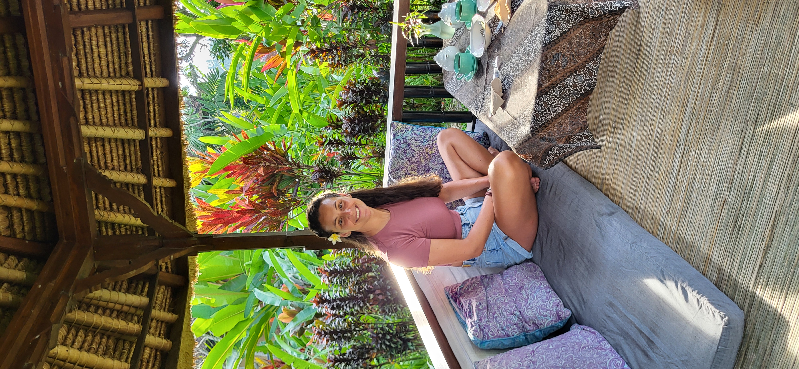

About Us
The Ocean Explorer

Hey there! I'm Antoine, and I've always felt most at home beneath the waves. As a marine biologist and professional diver, I've spent countless hours exploring the ocean's hidden wonders. There's something magical about watching a coral reef come alive at dawn or encountering a curious sea turtle in its natural habitat.
In my day-to-day life, I work as an engineer in natural resource management, helping to bridge the gap between conservation and practical solutions. While I love sharing our underwater adventures, I'm particularly passionate about making marine science more accessible to everyone. Too often, fascinating research stays locked away in academic papers. I want to change that by creating engaging content that helps people understand and fall in love with our oceans.
My dream? To become a dive instructor who not only teaches diving skills but also inspires a new generation of ocean guardians. Because protecting our seas isn't just about science – it's about creating a connection between people and the underwater world.
- Marine Life Guardian
- Environmental Steward
- Adventure Seeker
- Underwater Explorer
"Bridging seas with sustainability"
The Earth Whisperer
Hi! I'm Veronica. My journey with plants began in my grandfather's garden, where I first discovered the quiet magic of watching seeds sprout and flowers bloom. Today, as a plant scientist, I'm still captivated by the intricate ways plants communicate and adapt to their environment. There's something deeply moving about understanding how these silent beings shape our world.
On the science-side, my passion lies in transforming how we approach agriculture. I believe we're at a crucial point where we can blend traditional wisdom with modern science to create farming systems that nourish both people and the planet. Through practices like agroforestry and conservation agriculture, we're discovering that working with nature's rhythms can lead to more resilient and productive systems.
Beyond my scientific work, I find balance through yoga and mindfulness practices. I'm particularly drawn to Ayurveda's holistic approach to wellbeing, which beautifully mirrors nature's own cycles and patterns. Through my photography and content creation, I hope to share these connections between science, nature, and personal wellbeing, inviting others to discover their own relationship with the natural world.
- Plant Biology PhD Explorer
- Nature's Devoted Student
- Mindfulness Journey Guide
- Yoga Flow Creator
"Connecting minds with nature's rhythm"